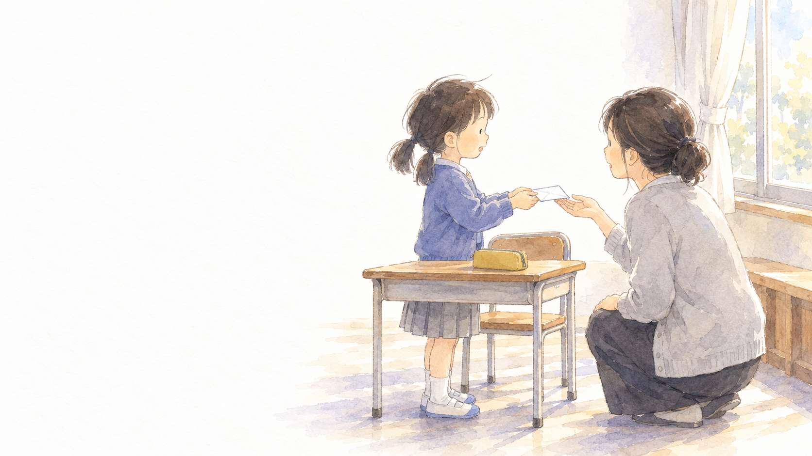
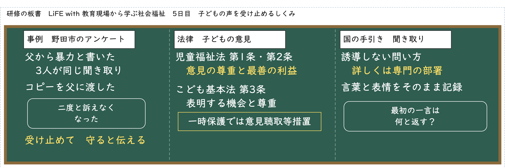
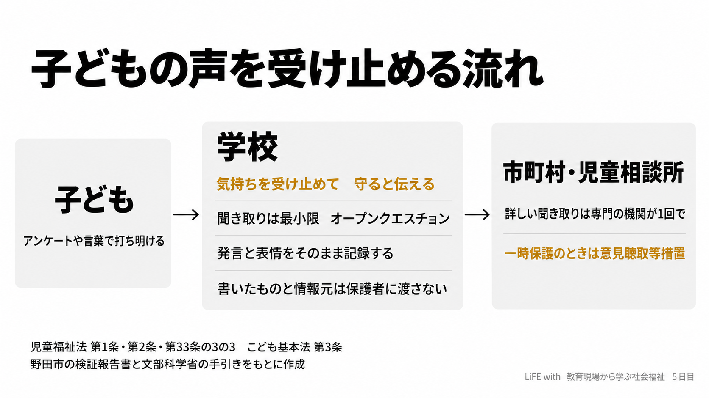

1 今日の問い
まず、自分で考えてみてください。答えが出なくても大丈夫です。先に考えておくと、あとの話が頭に残りやすくなります。
2 ラジオを聞く
文字をタップすると、その場所から聞けます。
動画で見る
板書

図解

3 あなたならどうするか
4 条文を確かめる
［ ］に入る言葉を選んでください。試験は条文の言葉で問われます。
5 自分の教室で考える
子どもや学校の名前、特定できる出来事は書かないでください。ここに書いたことは、この端末の中にだけ保存されます。どこにも送りません。
6 答え合わせ
最初の問いに、もう一度答えます。思い出すことで、記憶に残ります。
復習の日
終わったら押してください。3日後・7日後・21日後に、同じ問いがもう一度出てきます（間隔をあけた反復）。
国家試験の過去問
公益財団法人 社会福祉振興・試験センターが公表している社会福祉士国家試験の問題です。問題の文言は変えていません。この教材のほかの部分は LiFE with が独自に作ったもので、試験センターとは関係ありません。法改正により、今は問題として成り立たないものがあります。
専門家と国が発信している情報
法令（e-Gov法令検索）
- 児童福祉法（デジタル庁 e-Gov法令検索）
- 児童虐待の防止等に関する法律（デジタル庁 e-Gov法令検索）
- 社会福祉士及び介護福祉士法（デジタル庁 e-Gov法令検索）
国の指針と手引き
- 児童虐待防止対策（こども家庭庁）
- 児童虐待に係る法令・指針等一覧（こども家庭庁）
- 学校・教育委員会等向け虐待対応の手引き（文部科学省）
資格と専門職
出典
条文は e-Gov法令検索から取得したものです。事例は公開されている検証報告書の要約です。この教材は、小学校の教員が社会福祉について学んだことを記録するために、生成AI（Claude）を使って作り、出典と照らし合わせて確かめています。法律の判断が必要なときは、専門家に相談してください。
© LiFE with 絵：野々宮すみれ（LiFE withの素材スタジオ）